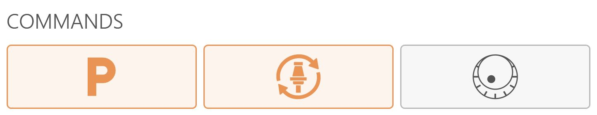
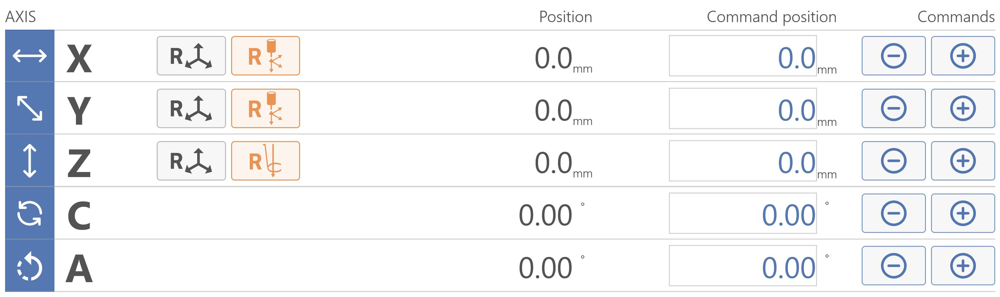
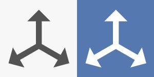
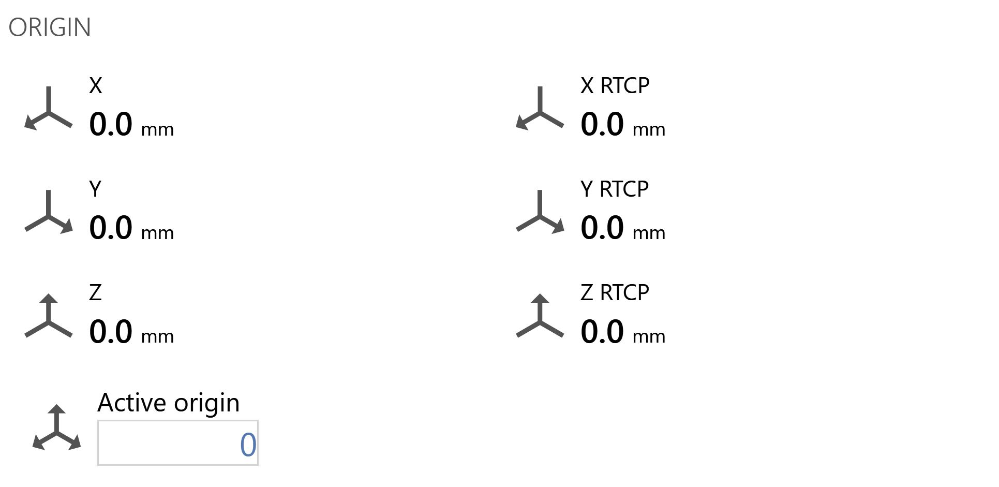
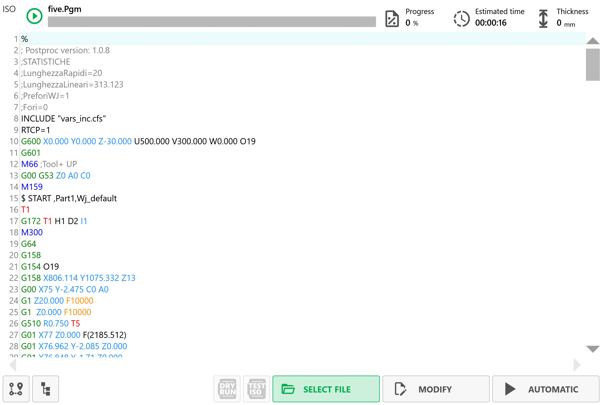
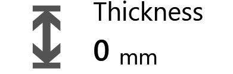
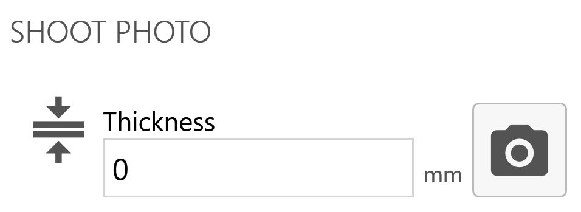

Ky seksion ndodhet në pjesën e sipërme qendrore të ndërfaqes. I mundëson operatorit të kryejë veprimet e mëposhtme:

Parkimi automatik Kur shtypet, makina i lëviz automatikisht boshtet “X”, “Y”, “Z”, “C” në pozicionin zero. Lëvizjet kryhen nga makina sipas rendit të mëposhtëm: (A) - Boshti “Z” në pozicionin zero absolut; (B) - Boshti “C” në pozicionin 0 absolut; (C) - Boshtet “X” dhe “Y” njëkohësisht në pozicionin Zero absolut;
Ndrysho veglën manualisht Shtypja e butonit nis procedurën e ndërrimit të veglës.
Rrota e dorës Aktivizon/Çaktivizon rrotën e dorës.
Modaliteti i punës
Seksioni i mëposhtëm ndodhet në pjesën e sipërme djathtas të ndërfaqes dhe i mundëson operatorit zgjedhjen e mëposhtme:
Manual Përcakton nëse makina është në gjendjen manuale.
Ekzekutim Përcakton nëse makina është në gjendjen e ekzekutimit.
Boshtet
Ky seksion ndodhet në pjesën e sipërme majtas të ndërfaqes. Forma dhe renditja e përmbajtjes së seksionit mund të ndryshojnë sipas modalitetit të zgjedhur të punës:
Manual
Me modalitetin e punës Manual , seksioni shfaqet si në imazhin e mëposhtëm shembull:

Butonat e boshteve
Vetëm në këtë modalitet pune janë të disponueshëm butonat e mëposhtëm:
Resetimi i boshtit Shtypja e këtij butoni cakton zeron e origjinës aktive në pikën ku ndodhet boshti përkatës (X, Y ose Z). Resetimi i boshtit mund të kryhet vetëm në origjina të ndryshme nga 0 (zero). Për të përdorur origjinën në koordinatat e veglës (TCP), duhet të jenë caktuar përmasat e sakta të veglës së montuar përpara se të shtypet butoni Resetimi i boshtit.
Resetimi i origjinave X dhe Y Për boshtet X dhe Y, origjinat e boshteve mund të resetohen me ndihmën e lazerit kryq.
Resetimi i origjinës Z Për boshtin Z, origjina e boshtit mund të resetohet me ndihmën e sondës së pllakës.
Ul kuotën e boshtit Për sa kohë që butoni mbahet i shtypur, kuota e boshtit të zgjedhur zvogëlohet.
Rrit kuotën e boshtit Për sa kohë që butoni mbahet i shtypur, kuota e boshtit të zgjedhur rritet.
Ekzekutim
Me modalitetin e punës Ekzekutim , seksioni shfaqet si në imazhin e mëposhtëm shembull:
Komandat e boshteve
Ky seksion ndodhet menjëherë në të djathtë të seksionit Boshtetdhe mundëson veprimet e mëposhtme:

Koordinatat RTCP Funksioni RTCP i mundëson operatorit të kryejë pozicionimin për një prerje të pjerrët duke e mbajtur të pandryshuar lartësinë e veglës, edhe kur pjerrësia ndryshohet gjatë pozicionimit. Buza e brendshme e diskut do të mbetet në të njëjtin pozicion ku ndodhej në fillim të lëvizjes.
Procedura e funksionimit:
Caktoni kuotën e synuar në zonën kushtuar boshtit “A” (pjerrësia) ose “C”
Shtypja e butonit RTCP nis funksionin e pjerrësisë ose rrotullimit duke e mbajtur të palëvizshme pikën më të ulët të veglës.
SHËNIM
Lëvizja me komandën RTCP lejohet vetëm kur çelësi i koduar është futur në vendin e duhur, i cili gjendet në konsolën e operatorit.
Prisni që makina të pozicionohet në kuotën e caktuar.
MDI / MDI RTCP Lëviz makinën nga koordinatat Pozicioni te koordinatat Pozicioni i komanduar.
SHËNIM
Komanda
MDI
është e disponueshme vetëm në modalitetin e punës
Manual
.
Origjina
Ky seksion ndodhet në pjesën e sipërme djathtas të ndërfaqes, menjëherë poshtë seksionit Modaliteti i punës. I mundëson operatorit të shohë origjinat e boshteve dhe origjinat RTXP, si dhe të shohë e të ndryshojë origjinën aktive.

ISO
Ky seksion shtrihet në pjesën e poshtme majtas të ndërfaqes dhe i mundëson operatorit të menaxhojë skedarët ISO. Kur ngarkohet një ISO, ndërfaqja merr pamjen e mëposhtme:

Shiriti i sipërm
Nis Nis PGM-në e ngarkuar aktualisht.
Ecuria Tregon ecurinë aktuale të përpunimit.
Koha e parashikuar Tregon një vlerësim të kohës së mbetur.

Trashësia Tregon trashësinë e pllakës.
Shiriti i poshtëm
Parapamja Shfaq një pamje paraprake të PGM-së së zgjedhur në një seksion në anën e djathtë të seksionit ISO.
Pjesët Tregon pjesët.
Ekzekutim pa përpunim Zgjedhja e këtij modaliteti pune mundëson kryerjen e një cikli me shpejtësinë maksimale të makinës.
Testi ISO Ky opsion mundëson testimin e skedarit të ngarkuar për të kontrolluar nëse ka gabime sintaksore. Shtypni butonin “NIS CIKLIN” dhe makina do të ekzekutojë virtualisht të gjitha rreshtat e kodit pa lëvizur boshtet.
Zgjidh skedarin Hap eksploruesin e skedarëve për të zgjedhur një skedar.
Ndrysho Ndryshon skedarin e zgjedhur.
Automatik Gjendja automatike.
Kërkimi i bllokut Ky buton shfaqet vetëm pasi të jetë ngarkuar të paktën një program në listë dhe mundëson kërkimin e bllokut sipas rreshtit.
Waterjet
Ky seksion ndodhet në pjesën qendrore djathtas të aplikacionit dhe i ofron operatorit mundësitë e mëposhtme:
Butonat e Tool Plus
Matja e veglës Kryen procedurën për matjen automatike të gjatësisë së veglës Tool Plus.
Rryma aktive e ujit Ndez rrymën e ujit dhe tregon nëse është aktive.
Pompa aktive Ndez pompën dhe tregon nëse është aktive.
Presioni i lartë Mundëson zgjedhjen e presionit të lartë/të ulët.
Abrazivi aktiv Aktivizon përdorimin e abrazivit.
Parametrat e Tool Plus
Presioni i ulët Presioni i ujit kur del me presion të ulët.
Presioni i lartë Presioni i ujit kur del me presion të lartë.
Prurja e abrazivit Sasia e abrazivit që transportohet në një minutë.
Abrazivi në LP Përqindja e prurjes së abrazivit kur makina është në modalitetin e presionit të ulët.
Shkrepja e fotos
Ky seksion ndodhet në pjesën e poshtme të ndërfaqes. Në përgjithësi, ky funksion mundëson fotografimin e tavolinës së punës së makinës duke përdorur pajisjen fotografike të integruar.

Trashësia Futja e kësaj vlere kërkohet për të kapur saktë imazhin e një pllake.
Shkrep foto Mundëson qasjen në panelin për menaxhimin e marrjes së imazheve
Paneli i shkrepjes së fotos
Shtypja e kësaj ikone shkrep një foto dhe hap faqen e imazhit të marrë. Nga kjo faqe mund ta hidhni ose ta ruani foton, duke përcaktuar shtegun e ruajtjes dhe trashësinë e dëshiruar.
Parametrat e ruajtjes
Emri i fotos Kjo fushë teksti mundëson caktimin e emrit të imazhit të shkrepur.
Shtegu i ruajtjes së fotos Kjo fushë teksti mundëson caktimin e shtegut ku do të ruhet imazhi.
Zgjidh shtegun e fotos Hap eksploruesin e skedarëve dhe i mundëson operatorit të zgjedhë shtegun e një imazhi.
Shkrep foto
Trashësia Futja e kësaj vlere kërkohet për të kapur saktë imazhin e një pllake.
Shkrep foto Ky buton i mundëson operatorit të marrë një imazh të ri me kamerën e lidhur me aplikacionin.
Feed
Ky seksion ndodhet në pjesën e poshtme djathtas të ndërfaqes dhe mundëson shfaqjen e vlerës Feed, e cila përfaqëson lëvizjen e interpoluar të makinës.